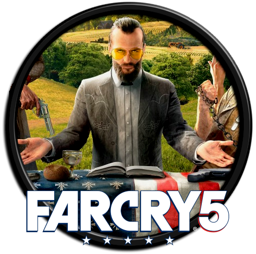
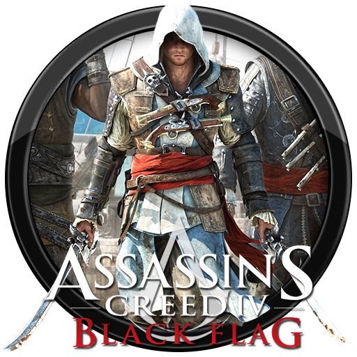
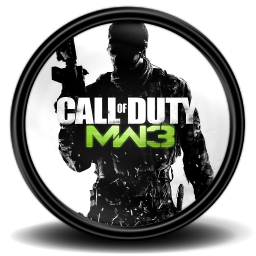
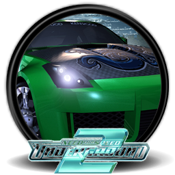

На головну
Одиночні ігри

Far Cry 5 — відеогра 2018 року в жанрі шутера від першої особи та action-adventure. Розробку гри
очолює студія Ubisoft Montreal. Дія гри розгортається в окрузі Хоуп, штат Монтана, і розповідає про
протистояння помічника шерифа і культу судного дня під назвою «Брама Едему». Вийшла 27 березня 2018 року
на платформах Windows, PlayStation 4 і Xbox One.

Grand Theft Auto V (скор. GTA V) — це пригодницька відеогра 2013 року, розроблена Rockstar North
та видана компанією Rockstar Games. Події відбуваються у вигаданому штаті Сан-Андреас, що заснований на
південній Каліфорнії. Сюжетна історія слідує за трьома злочинцями, які перебувають під тиском урядового
відомства та авторитетних кримінальних фігур. Дизайн відкритого світу дозволяє гравцям вільно переміщуватися
по місцевості Сан-Андреаса та вигаданому місту Лос-Сантос, на базі Лос-Анджелеса.

Assassin's Creed IV: Black Flag (укр. «Кредо Асасина 4: Чорний Прапор») — відеогра в жанрі
пригодницького бойовика, розроблена компанією Ubisoft Montreal для платформ PlayStation 3, Xbox 360,
Wii U, Windows, а також для платформ восьмого покоління. Протагоністом гри виступає пірат Едвард Кенвей
(англ. Edward Kenway), батько Гейтема Кенвея з Assassin's Creed III; дія розгортається в Золоту добу
піратства, в Карибському морі на декількох островах на початку XVIII століття. Едварду випадає нагода
розбагатіти, розшукавши таємничу «Обсерваторію», сховану десь у джунглях. Проте її ж шукають і тамплієри
з метою отримати владу над світовими лідерами.

Call of Duty Modern Warfare 3 (укр. «Поклик Обов'язку: Сучасна війна 3», «Службовий обов'язок:
Сучасна війна 3») — мультиплатформерна відеогра в жанрі тривимірного шутера від першої особи, сиквел
попередньої гри із підсерії Modern Warfare — Call of Duty: Modern Warfare 2. Остання, заключна частина
підсерії Modern Warfare і восьма гра в серії серії Call of Duty. Розроблена компанією Infinity Ward
при допомозі студії Raven Software, видавцем гри виступила Activision.

Need for Speed: Underground 2 (укр. Жага швидкості: Підпілля 2; скор. NFSU2) — восьма відеогра
серії Need for Speed в жанрі автосимулятора, розроблена студією EA Black Box і видана компанією Electronic
Arts для ігрових приставок і персональних комп'ютерів в 2004 році. Гра є сиквелом Need for Speed: Underground.